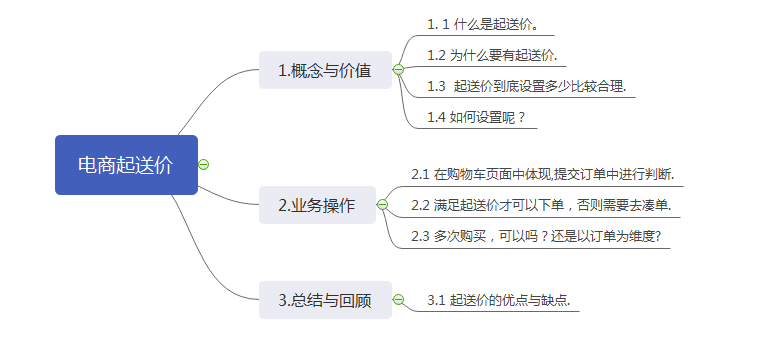

Java生鲜电商平台-电商起送价的深入思考与实战
说明：在生鲜电商中，起送价是一个非常普遍的话题，今天我们就用实战来告诉大家，如何设置起送价，如何编写起送价的代码,以及如何同步起送价。
在开始题目之前，我们思考一下几个问题：

1. 业务概念
1.1 什么是起送价。
起送价就是你这一单要满多少钱才给你送。例如15块钱起送，那你买14块的东西就送不了.
1.2. 为什么要有起送价。
一是为了降低成本
假设你本来想买两件东西，如果无论价格多少都包邮的话可能会下两次单，动用两次人力和财力。但有包邮价格后人一般都选择一起下单。这样节约了资源。
二是为了获取更大利益
比如你买了一件10元的东西给你包邮，可能盈利只有4元，但邮费成本（注意：是成本，非对外盈利价格）可能就是4元甚至更多。那盈利肯定就不多。而且大家往往为了凑免运费而买更多的产品。
商人嘛，讲究利益和成本。遇到不明白的往这两方面思考就好。
因为卖家也需要盈利。如果你买的太少，还不够路费，那卖家不是亏死了。
1.3. 起送价到底设置多少比较合理。
对于生鲜电商来讲，这个是很有讲究的，不能随便设置，一般的情况下，我们实际是采用平均客单价，然后处于2来算一个合理的值，最终我们确定，我们的起送价是58元。
1.4. 如何设置起送价呢？
起送价不能写死，因为公司需要灵活安排，随时可以改，但是也不能随意改，所以需要有一个APP到管理后台，同步的过程，那什么时候同步呢？如何同步呢？
1.4.1 数据是写在参数表中的
1.4.2 每次APP启动的时候，调用这个接口，把最新的起送价数据拿到本地缓存起来。
CREATE TABLE `sys_params` (
`id` bigint(20) NOT NULL AUTO_INCREMENT COMMENT 'id',
`param_code` varchar(32) DEFAULT NULL COMMENT '参数编码',
`param_value` varchar(2000) DEFAULT NULL COMMENT '参数值',
`param_type` tinyint(3) unsigned DEFAULT '1' COMMENT '类型 0：系统参数 1：非系统参数',
`remark` varchar(200) DEFAULT NULL COMMENT '备注',
`creator` bigint(20) DEFAULT NULL COMMENT '创建者',
`create_date` datetime DEFAULT NULL COMMENT '创建时间',
`updater` bigint(20) DEFAULT NULL COMMENT '更新者',
`update_date` datetime DEFAULT NULL COMMENT '更新时间',
`del_flag` tinyint(2) DEFAULT '0' COMMENT '是否可用 0：可用 1：不可用',
PRIMARY KEY (`id`),
UNIQUE KEY `uk_param_code` (`param_code`),
KEY `idx_create_date` (`create_date`)
) ENGINE=InnoDB AUTO_INCREMENT DEFAULT CHARSET=utf8mb4 COMMENT='参数管理';
2. 业务操作
2.1 使用方式
我们设置了起送价，那么在那个步骤进行使用呢？答案很简单，就是在购物车页面，提交订单的功能中,APP或者小程序页面中，判断下当前的订单总额是否大于或者等于起送价，如果是的，就允许提交订单，否则就显示还差多少金额，去凑单的功能更。
2.2 多次购买如何处理呢？
在实际业务中，我们经常的发现用户买完了东西后，比如起送价100元，但是用户这一单买了300元，起送价也足够了，而且配送也包邮了，但是用户盘点的时候，比如发现
大白菜少了10斤，这个时候，用户再次下单，购买10斤大白菜，很明晰，大白菜不够起送价，那么怎么办？
是强制以订单为单位，如果不满足订单的话，就不让下单，这样简单粗暴的方式肯定是会惹得客户不高兴，或许以后丢失这个客户。那么怎么办呢？
1. 判断用户今天是否下过单，如果下过单，那么第二次下单就不用起送价，否则的话，还是需要起送价。
我们回顾下：
1. 先前我们是在购物车的时候用订单金额跟起送价对比，那么这个下过单的同一天再次下单，应该是在哪里进行判断呢？
答案是：在进入购物车的时候，需要提供一个接口，用来判断用户是否曾经下过单，如果下单了，这次就只判断金额大于0即可。
我贴出来实际的业务代码：
public class ShoppingCartManager {
private ShoppingCartDao shoppingCartDao;
public ShoppingCartManager() {
shoppingCartDao = BaseApplication.getInstance().getDaoSession().getShoppingCartDao();
}
public List<ShoppingCart> getBySeller(long sellerId, long userId) {
return shoppingCartDao.queryBuilder().where(ShoppingCartDao.Properties.SellerId.eq(sellerId))
.where(ShoppingCartDao.Properties.BuyerId.eq(userId)).build().list();
}
public List<ShoppingCart> getByUser(long userId) {
return shoppingCartDao.queryBuilder()
.where(ShoppingCartDao.Properties.BuyerId.eq(userId)).build().list();
}
public List<ShoppingCart> getByFormat(long sellerId, long userId, long formatId) {
return shoppingCartDao.queryBuilder().where(ShoppingCartDao.Properties.SellerId.eq(sellerId))
.where(ShoppingCartDao.Properties.BuyerId.eq(userId))
.where(ShoppingCartDao.Properties.FormatId.eq(formatId)).build().list();
}
public void shopping(ShoppingCart goodsCart) {
ShoppingCart queryGoods = shoppingCartDao.queryBuilder()
.where(ShoppingCartDao.Properties.BuyerId.eq(goodsCart.getBuyerId()))
.where(ShoppingCartDao.Properties.FormatId.eq(goodsCart.getFormatId()))
.where(ShoppingCartDao.Properties.MethodId.eq(goodsCart.getMethodId()))
.where(ShoppingCartDao.Properties.SellerId.eq(goodsCart.getSellerId()))
.build().unique();
int count = goodsCart.getGoodsNumber();
if (queryGoods == null) {
if (count > 0) {
goodsCart.setIsSelected(1);
shoppingCartDao.insert(goodsCart);
}
} else {
if (count == 0) {
shoppingCartDao.delete(queryGoods);
} else {
queryGoods.setGoodsNumber(goodsCart.getGoodsNumber());
shoppingCartDao.update(queryGoods);
}
}
}
public void update(ShoppingCart goodsCart) {
ShoppingCart queryGoods = shoppingCartDao.queryBuilder()
.where(ShoppingCartDao.Properties.BuyerId.eq(goodsCart.getBuyerId()))
.where(ShoppingCartDao.Properties.FormatId.eq(goodsCart.getFormatId()))
.where(ShoppingCartDao.Properties.MethodId.eq(goodsCart.getMethodId()))
.where(ShoppingCartDao.Properties.SellerId.eq(goodsCart.getSellerId()))
.build().unique();
if (queryGoods != null) {
queryGoods.setPrice(goodsCart.getPrice());
queryGoods.setIsSelected(goodsCart.getIsSelected());
shoppingCartDao.update(queryGoods);
}
}
public void deleteBySeller(long userId, long sellerId) {
List<ShoppingCart> queryGoods = shoppingCartDao.queryBuilder()
.where(ShoppingCartDao.Properties.BuyerId.eq(userId))
.where(ShoppingCartDao.Properties.SellerId.eq(sellerId))
.build().list();
for (ShoppingCart c : queryGoods) {
shoppingCartDao.delete(c);
}
}
public void deleteByUser(long userId) {
List<ShoppingCart> queryGoods = shoppingCartDao.queryBuilder()
.where(ShoppingCartDao.Properties.BuyerId.eq(userId))
.build().list();
for (ShoppingCart c : queryGoods) {
shoppingCartDao.delete(c);
}
}
public void deleteItem(ShoppingCart goodsCart) {
ShoppingCart queryGoods = shoppingCartDao.queryBuilder()
.where(ShoppingCartDao.Properties.BuyerId.eq(goodsCart.getBuyerId()))
.where(ShoppingCartDao.Properties.FormatId.eq(goodsCart.getFormatId()))
.where(ShoppingCartDao.Properties.MethodId.eq(goodsCart.getMethodId()))
.where(ShoppingCartDao.Properties.SellerId.eq(goodsCart.getSellerId()))
.build().unique();
if (queryGoods != null) {
shoppingCartDao.delete(queryGoods);
}
}
public void insert(ShoppingCart shoppingCart) {
shoppingCartDao.insert(shoppingCart);
}
}